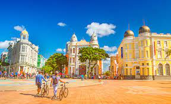

O Marco Zero é um dos pontos turísticos mais famosos de Recife, localizado no bairro do Recife Antigo. É um marco geográfico que representa o início das estradas que levam a outras regiões do Brasil.
O Marco Zero é conhecido por sua rosa dos ventos, onde você pode ver a direção dos pontos cardeais, e também pela bela vista para o Rio Capibaribe.
O local é rodeado por bares, restaurantes e lojas de artesanato, tornando-o um ponto de encontro popular para moradores e turistas. É também um local importante para festivais e eventos culturais em Recife.
Descubra mais pontos turísticos em Recife Antigo